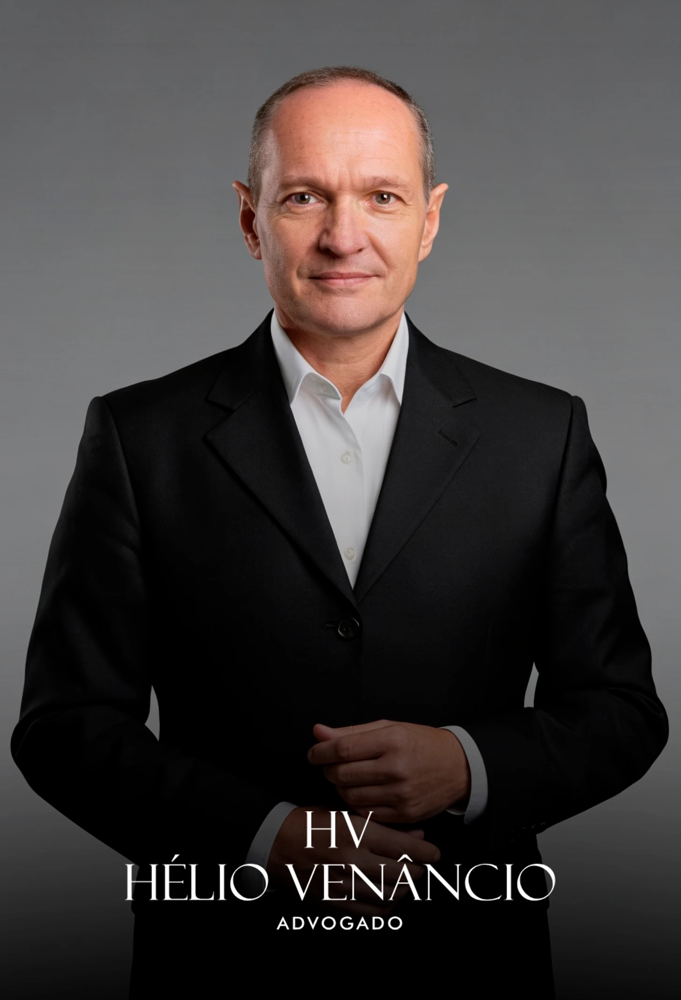

Protegendo sua dignidade, seu patrimônio e as pessoas que você mais ama através de uma abordagem jurídica inteligente, cuidadosa e alinhada with as melhores estratégias legais.
Atuação especializada com acompanhamento próximo e absoluto sigilo.
A partilha incorreta de bens, a perda da guarda ou a definição injusta da pensão podem comprometer o seu futuro e a dignidade de quem você ama.
Procedimento célere e amigável quando há consenso mútuo. Pode ser realizado diretamente em cartório com total agilidade e sigilo.
Conduzido judicialmente nos casos em que não há acordo. Defesa técnica e estratégica para salvaguardar os seus interesses.
Análise contábil e jurídica minuciosa para partilhar de maneira justa o patrimônio acumulado, evitando fraudes e ocultação.
Cálculo técnico baseado na necessidade de quem recebe e possibilidade de quem paga. Revisão, exoneração ou execução de valores.
Estabelecemos regimes de convivência e guarda focados inteiramente na proteção dos filhos e em rotinas familiares funcionais.
Reconhecimento formal e subsequente dissolução estratégica da união estável, tanto por vias administrativas quanto judiciais.

A experiência jurídica construída ao longo de quase três décadas permite atuação técnica, estratégica e cuidadosa em demandas que envolvem urgência, continuidade terapêutica e preservação da dignidade do paciente.
O atendimento é realizado com seriedade, discrição e acompanhamento próximo do caso.
Entendemos que o processo de divórcio exige mais do que conhecimento da lei: demanda sensibilidade para compreender os conflitos humanos e firmeza de conduta para guiar o cliente em direção ao seu novo começo, oferecendo um porto seguro e assessoria de alto nível técnico a cada etapa.
Respondemos abaixo a algumas das principais indagações recebidas em nosso escritório sobre os trâmites legais do divórcio.
Não tome decisões precipitadas que possam prejudicar o seu futuro financeiro e familiar. Proteja seus ativos e seus direitos a partir de uma orientação clara. Estamos à disposição para avaliar a particularidade do seu caso com total discrição.
Falar com um advogado de família